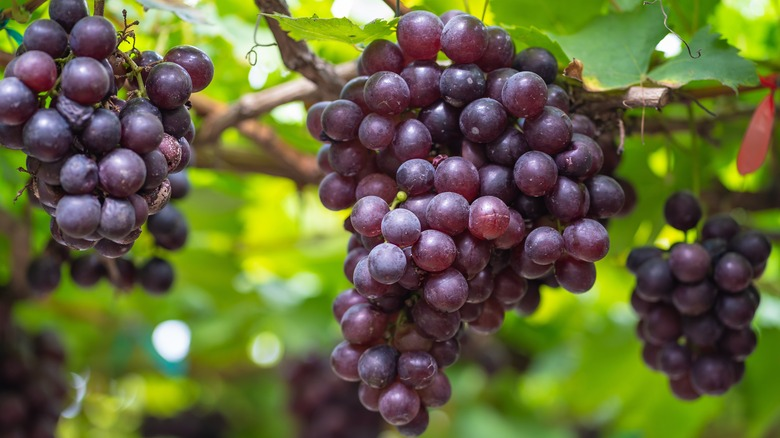
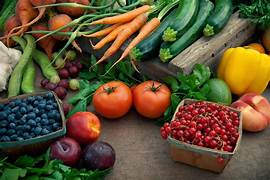
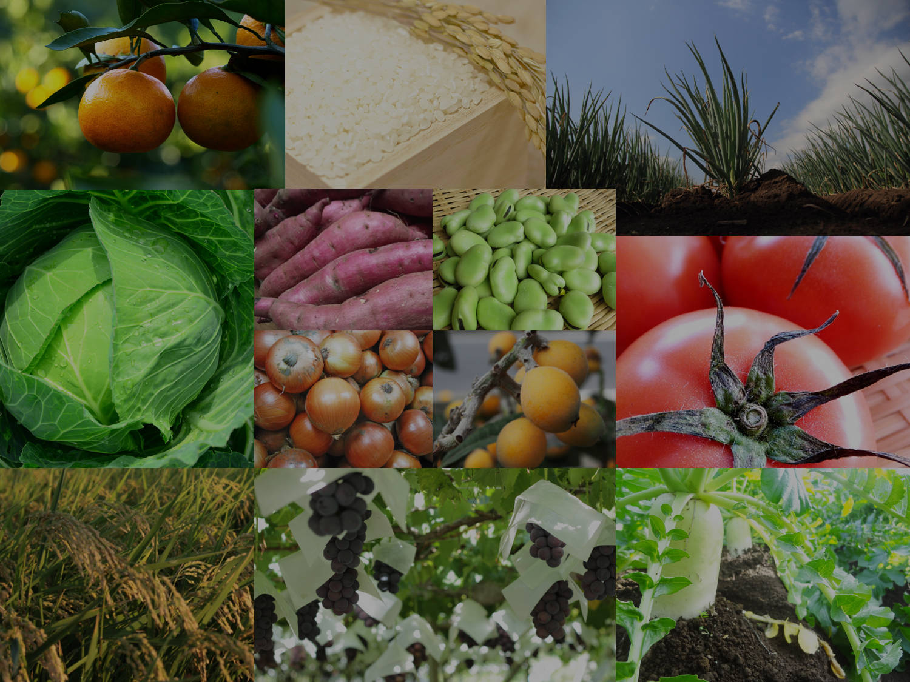
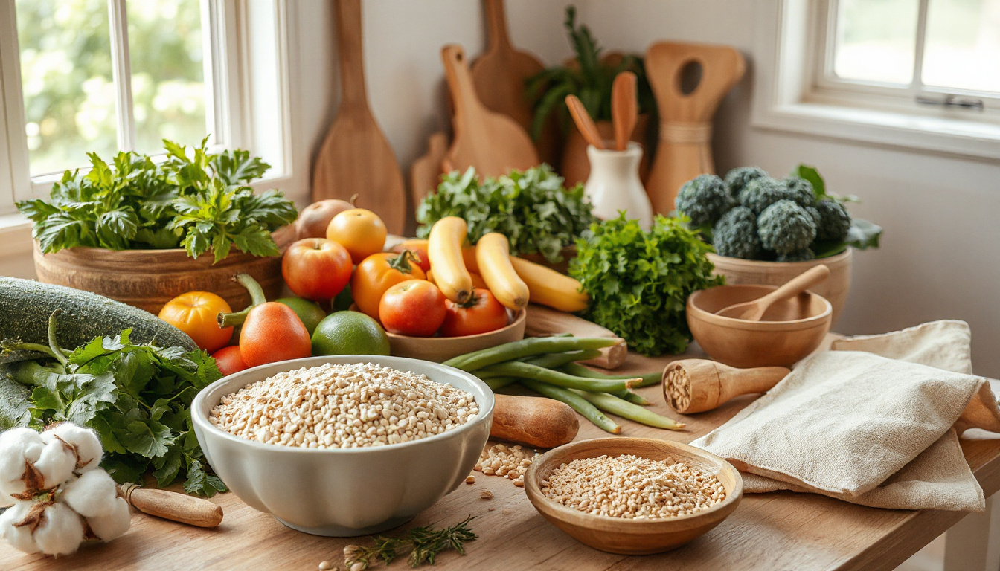

The agricultural market is a dynamic global network where farmers, agribusinesses, and consumers trade raw food, fiber, and livestock products. It operates through a mix of traditional physical marketplaces, local supply chains, and complex international commodity exchanges like the Chicago Board of Trade.


Fresh organic vegetables directly from farms with good quality.

Healthy farm products available for customers at affordable rates.

Natural and organic products grown using modern farming.